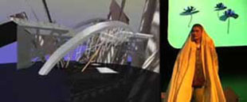

Welcome to the video library and archives of the Experimental Television Center.
From its founding in 1969 to its closing in 2011, the Experimental Television Center was one of North America’s preeminent centers for experimental video art. The Center provided education and outreach, independent art advocacy, fellowships, and a groundbreaking artist residency program. Over the center’s 40-year history, the residency program allowed over 1500 media artists to use the Center’s studio, unique image processing tools, and video library.
In 2011, Cornell’s Rose Goldsen Archive of New Media Art became the repository for ETC’s collection of over 3000 media artworks on videotape and DVD. Though the Residency and Grants Program were closed in 2011, many of these artworks have been digitized for preservation and access, and all are available to the research community and the public through Cornell University Library’s Division of Rare and Manuscript Collections. This website provides access information and some historical and technological context for understanding these collections.
For more thorough information about the Experimental Television Center, its history, its mission, and its ongoing activities, please see the ETC website. Though officially closed since 2011, the ETC and its staff remain an active force in promoting, preserving, and advocating for media experimentation and media art history.
Tools and Technology

Learn about the tools and technology
Rose Goldsen Archive of New Media Art

ETC is part of the Rose Goldsen Archive of New Media Art, which serves as a research repository for new media art and resources. Its curatorial vision emphasizes digital interfaces and artistic experimentation by international, independent artists.